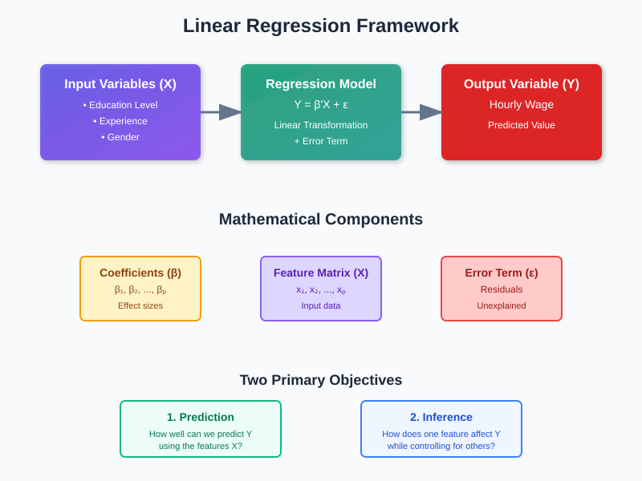
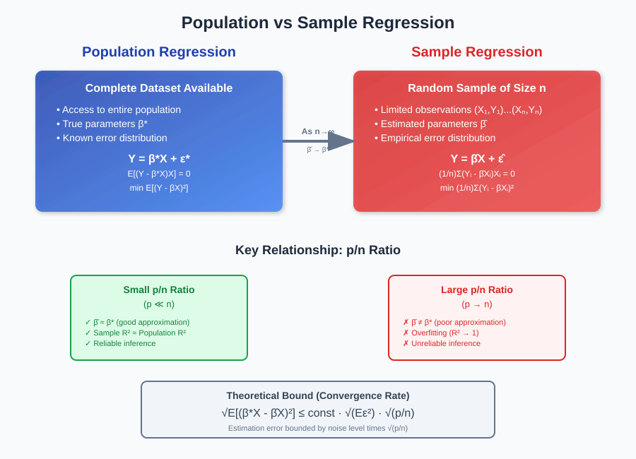
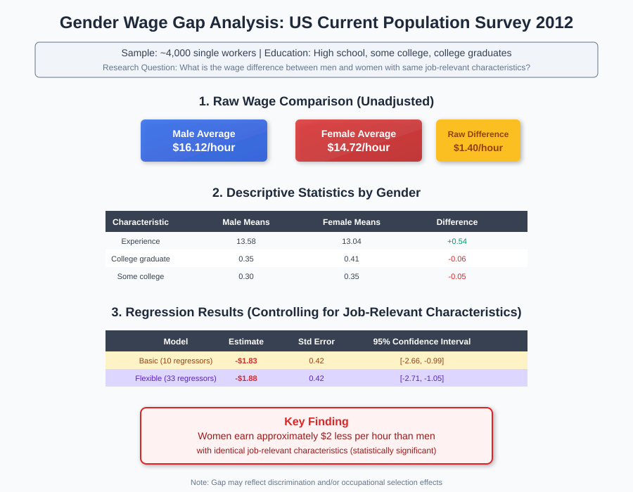
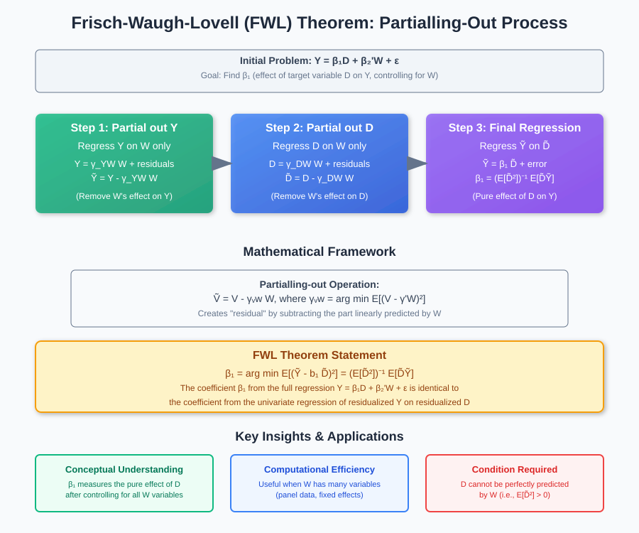
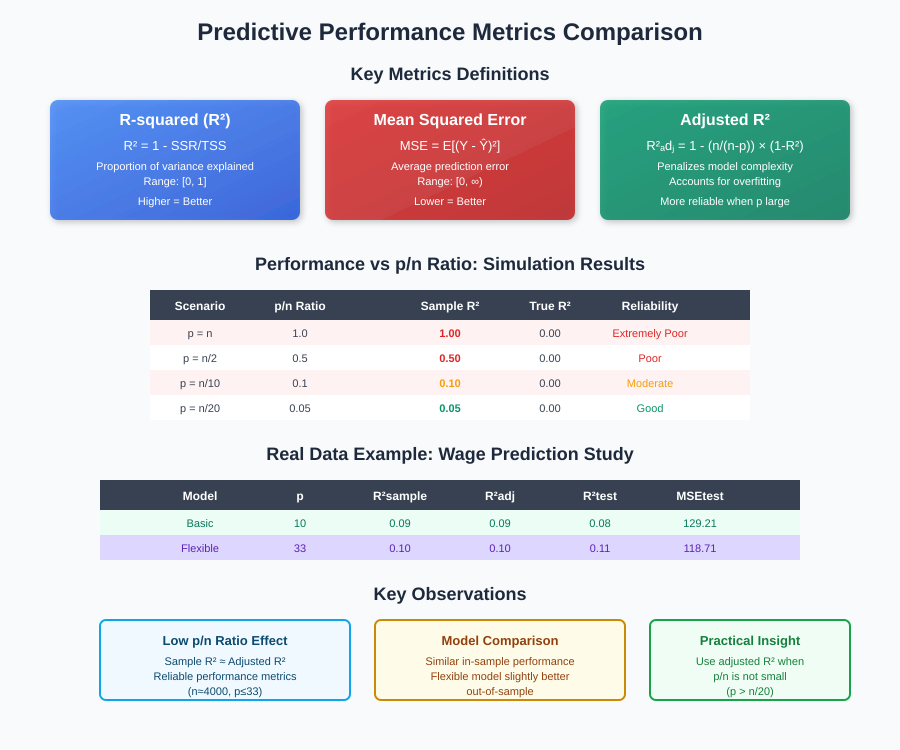
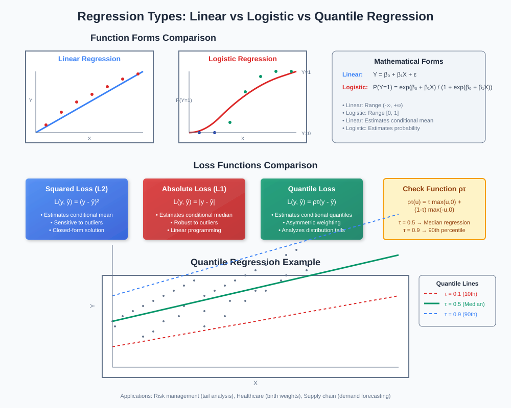

Linear Regression Analysis and Gender Wage Gap Case Study

🚀 Quick Navigation
- Introduction to Regression Analysis
- Theoretical Foundations
- Population vs Sample Regression
- Gender Wage Gap Case Study
- Inference Methods and FWL Theorem
- Predictive Performance Measures
- Practical Implementation
- Model Comparison Results
- Beyond Linear Regression
- References & Further Reading
📊 Introduction to Regression Analysis
Linear regression analysis is a fundamental supervised machine learning technique that identifies linear correlations between an outcome variable Y and a set of regressors X. This method serves two primary analytical purposes:
Core Questions Addressed
1. The Prediction Question: How can we use the set of regressors X to predict Y effectively?
2. The Inference Question: How does the predicted value of Y change when we modify one component of X while keeping all other components constant?
Mathematical Foundation
We represent the relationship as:
Y = β'X + ε
Where: - Y = Outcome variable (dependent variable) - X = (x₁, x₂, ..., xₚ)' = Vector of regressors (independent variables) - β = (β₁, β₂, ..., βₚ)' = Regression parameters - ε = Error term (residuals)

Practical Example: Wage Prediction
Consider predicting hourly wages using worker characteristics:
- Y: Hourly wage
- X: Education level, gender, experience, skill set, geographical location
- Goal: Understand how each factor influences wage prediction
🧮 Theoretical Foundations
Population vs Sample Distinction
Population Regression assumes access to the complete dataset (e.g., all US workers), allowing us to calculate the true expected value E[Y].
Sample Regression works with a randomly drawn subset, requiring estimation of population parameters using sample statistics.
Best Linear Predictor (BLP)
The population BLP minimizes the mean squared prediction error:
min E[(Y - β'X)²]
β
The solution is obtained through the Normal Equations:
E[(Y - β'X)X] = 0
This leads to the fundamental decomposition:
Y = β'X + ε
where E[εX] = 0

Key Insights
- β'X represents the explained portion of Y
- ε represents the unexplained residual component
- When p/n is small, sample regression approximates population regression well
- Large p/n ratios can lead to overfitting and poor generalization
👥 Population vs Sample Regression
Population Case
When we have access to complete population data:
Population BLP: Y = β*X + ε*
Error Minimization: min E[(Y - β'X)²]
Normal Equations: E[(Y - β'X)X] = 0
Sample Case
Working with sample data (X₁,Y₁), (X₂,Y₂), ..., (Xₙ,Yₙ):
Sample BLP: Y = β̂X + ε̂
Error Minimization: min (1/n)Σ(Yᵢ - β'Xᵢ)²
Sample Normal Equations: (1/n)Σ(Yᵢ - β̂'Xᵢ)Xᵢ = 0
Convergence Conditions
Under regularity conditions, the estimation error is bounded:
√E[(β*X - β̂X)²] ≤ const · √(Eε²) · √(p/n)
This theoretical result shows that when n is large and p << n, sample regression closely approximates population regression.
💰 Gender Wage Gap Case Study
Dataset Overview
Source: US Current Population Survey (March 2012) Sample Size: ~4,000 single workers Education Levels: High school, some college, college graduates
Descriptive Statistics
| Variable | Mean |
|---|---|
| Wage ($/hour) | 15.53 |
| Female | 0.42 |
| Experience (years) | 13.35 |
| College graduate | 0.38 |
| Some college | 0.32 |
| High school graduate | 0.30 |
Gender Comparison
| Characteristic | Male Means | Female Means |
|---|---|---|
| Wage | 16.12 | 14.72 |
| Experience | 13.58 | 13.04 |
| College graduate | 0.35 | 0.41 |
| Some college | 0.30 | 0.35 |
| High school graduate | 0.34 | 0.24 |

Research Question
"What is the difference in predicted wages between men and women with the same job-relevant characteristics?"
Model Specifications
Basic Model (10 regressors): - Female indicator, education levels, regional indicators - Experience, experience², experience³
Flexible Model (33 regressors): - All basic model variables plus two-way interactions
Key Findings
| Model | Estimate | Std Error | Confidence Interval |
|---|---|---|---|
| Basic | -1.83 | 0.42 | [-2.66, -0.99] |
| Flexible | -1.88 | 0.42 | [-2.71, -1.05] |
Conclusion: Women earn approximately $2 less per hour than men with identical job-relevant characteristics.
Interpretation Considerations
- Genuine Discrimination: Direct bias against women in labor markets
- Selection Effect: Women may choose occupations with different pay structures (e.g., teaching)
🔍 Inference Methods and FWL Theorem
Partitioning Regressors
For inference questions, we partition X = (D, W):
- D: Target regressor of interest (e.g., gender)
- W: Control variables (e.g., education, experience)
The inference question becomes: How does Y change when D increases by one unit, holding W fixed?
Frisch-Waugh-Lovell (FWL) Theorem
The FWL theorem provides a powerful conceptual tool for understanding regression coefficients:

Partialling-Out Procedure
Step 1: Predict Y using W only, obtain residuals Ỹ
Ỹ = Y - γ_YW W
Step 2: Predict D using W only, obtain residuals D̃
D̃ = D - γ_DW W
Step 3: Regress Ỹ on D̃
β₁ = (E[D̃²])⁻¹ E[D̃Ỹ]
Key Insight
The coefficient β₁ on the target regressor D in the full regression Y = β₁D + β₂'W + ε is identical to the coefficient from the univariate regression of residualized Y on residualized D.
Applications
Computational Efficiency: When dealing with many regressors, partialling-out can be more efficient than full OLS
Conceptual Clarity: Helps understand what each coefficient represents after controlling for other variables
📈 Predictive Performance Measures
Analysis of Variance (ANOVA)
The regression equation Y = β'X + ε decomposes total variation:
Total Variation = Explained Variation + Residual Variation
E[Y²] = E[(β'X)²] + E[ε²]
Key Performance Metrics
Mean Squared Error (MSE)
MSE_pop = E[ε²] = E[(Y - β'X)²]
R-squared (Coefficient of Determination)
R² = E[(β'X)²] / E[Y²] = 1 - E[ε²] / E[Y²] ∈ [0,1]
Interpretation: Proportion of Y variation explained by the regression
Sample vs Population Metrics

When p/n is Small
- Sample R² ≈ Population R²
- Sample MSE ≈ Population MSE
- Sample metrics provide reliable performance estimates
When p/n is Large
- Sample R² can be misleadingly high
- Risk of overfitting increases
- Need for adjusted metrics becomes critical
Adjusted R-squared
R²_adj = 1 - (n/(n-p)) · (E_n[ε̂²]/E_n[Y²])
Penalizes model complexity and provides more reliable performance assessment when p is substantial relative to n.
Out-of-Sample Validation
Training/Test Split Methodology:
- Training Sample: Estimate β̂ using n observations
- Test Sample: Evaluate performance on m holdout observations
MSE_test = (1/m) Σ(Y_k - β̂'X_k)² for k ∈ Test
R²_test = 1 - MSE_test / ((1/m) Σ Y_k²) for k ∈ Test
💻 Practical Implementation
Code Integration

Dataset Requirements
- Minimum Sample Size: n ≥ 20p (rule of thumb)
- Data Quality: Check for missing values, outliers
- Feature Engineering: Consider interactions, polynomial terms
- Multicollinearity: Examine correlation structure
Implementation Checklist
- Data Preprocessing
- Handle missing values
- Scale/normalize features if needed
-
Create dummy variables for categorical data
-
Model Specification
- Start with basic model
- Add complexity gradually
-
Test interaction terms
-
Diagnostic Checks
- Residual analysis
- Normality tests
-
Heteroskedasticity assessment
-
Performance Evaluation
- In-sample metrics (R², adjusted R²)
- Out-of-sample validation
- Cross-validation for robust estimates
Related Models
- Ridge Regression: For high-dimensional settings
- Lasso Regression: For feature selection
- Elastic Net: Combines Ridge and Lasso benefits
📊 Model Comparison Results
Wage Prediction Study Results
| Model | Regressors (p) | R²_sample | R²_adj | MSE_adj | R²_test | MSE_test |
|---|---|---|---|---|---|---|
| Basic | 10 | 0.09 | 0.09 | 165.68 | 0.08 | 129.21 |
| Flexible | 33 | 0.10 | 0.10 | 165.12 | 0.11 | 118.71 |
Key Observations
- Similar Performance: Basic and flexible models show comparable results
- Low p/n Ratio: With n≈4000, both models have small p/n ratios
- Consistent Metrics: Sample and adjusted R² are nearly identical
- Slight Improvement: Flexible model performs marginally better out-of-sample
Performance Interpretation
The similar performance between basic and flexible models suggests:
- Adequate Specification: Basic model captures most relevant relationships
- Diminishing Returns: Additional complexity provides minimal improvement
- Stable Estimates: Low overfitting risk due to large sample size
Simulation Example: Overfitting Risk
Consider synthetic data where Y and X are independent (true R² = 0):
| Scenario | Sample R² | True R² |
|---|---|---|
| p = n | 1.00 | 0.00 |
| p = n/2 | 0.50 | 0.00 |
| p = n/20 | 0.05 | 0.00 |
This demonstrates the importance of maintaining low p/n ratios for reliable inference.
↩ Back to Top
🔄 Beyond Linear Regression
While linear regression forms the foundation of regression analysis, many real-world problems require extensions beyond the basic linear framework. This section explores alternative regression approaches that address different data types and modeling assumptions.
Non-Linear Functional Forms
Logistic Regression
When the outcome variable Y is binary (taking values 0 or 1), linear regression becomes inappropriate as it can predict values outside the [0,1] range. Logistic regression addresses this limitation using a non-linear transformation:
p(X, β) = exp(β'X) / (1 + exp(β'X))
Key Properties: - Output is naturally constrained between 0 and 1 - Predictions can be interpreted as probabilities P(Y = 1 | X) - Forms the foundation for classification problems - Uses maximum likelihood estimation instead of least squares

Parameter Estimation Methods:
-
Non-linear Least Squares:
min En[(Yi - p(Xi, b))²] -
Maximum Likelihood (preferred for binary outcomes):
max En[Yi ln p(Xi, b) + (1 - Yi) ln(1 - p(Xi, b))]
Alternative Loss Functions
Mean vs Median Regression
Traditional linear regression minimizes squared error loss, which estimates the conditional mean:
E[(Y - β'X)²] → Estimates E[Y | X]
However, alternative loss functions target different aspects of the conditional distribution.
Median Regression (L1 Loss)
Median regression uses absolute deviation loss instead of squared loss:
min E[|Y - β'X|] → Estimates Median[Y | X]
Advantages of Median Regression: - Robust to outliers: Heavy-tailed distributions and extreme values have less influence - Stable estimates: Less sensitive to data anomalies - Interpretable: Provides the conditional median rather than mean
Population vs Sample Formulation: - Population: min E[|Y - b'X|] - Sample: min (1/n) Σ|Yi - b'Xi|
Quantile Regression
Quantile regression generalizes median regression to estimate any percentile of the conditional distribution using asymmetric absolute deviation loss.
Mathematical Framework:
For the τ-th quantile (where τ ∈ (0,1)):
Qτ(Yi) = β0(τ) + β1(τ)xi1 + ... + βp(τ)xip
Check Function (ρτ):
ρτ(u) = τ max(u, 0) + (1 - τ) max(-u, 0)
This asymmetric weighting gives different penalties for over- and under-prediction based on the target quantile.
Objective Function:
min (1/n) Σ ρτ(yi - β0(τ) - β1(τ)xi1 - ... - βp(τ)xip)
Practical Applications
Risk Management
- Conditional Value-at-Risk (CVaR): Forecast extreme conditional percentiles for financial risk assessment
- Tail risk analysis: Model worst-case scenarios using low quantiles (τ = 0.05, 0.01)
Healthcare Analytics
- Birth weight analysis: Study how controllable factors (smoking, nutrition) affect low percentiles of infant birth weights
- Treatment efficacy: Evaluate treatment effects across the entire outcome distribution
Supply Chain Management
- Inventory optimization: Predict inventory levels needed to meet 90th percentile of demand
- Capacity planning: Model peak usage scenarios using high quantiles
Economic Analysis
- Income inequality: Study factors affecting different income percentiles
- Wage distribution: Analyze how education affects wages across the earnings distribution
Model Selection Considerations
| Regression Type | Best Used When | Loss Function | Estimates |
|---|---|---|---|
| Linear (OLS) | Normal errors, continuous Y | Squared loss | Conditional mean |
| Logistic | Binary outcomes | Log-likelihood | Classification probabilities |
| Median | Heavy tails, outliers present | Absolute loss | Conditional median |
| Quantile | Interested in distribution tails | Asymmetric absolute | Conditional quantiles |
Implementation Considerations
Computational Complexity: - Linear regression: Closed-form solution available - Logistic regression: Requires iterative optimization (Newton-Raphson) - Median regression: Linear programming problem - Quantile regression: Can be solved via linear programming
Sample Size Requirements: - Quantile regression typically requires larger samples for stable tail estimates - Extreme quantiles (τ < 0.1 or τ > 0.9) need particularly large samples
Interpretation Differences: - Linear: "One unit increase in X changes expected Y by β" - Logistic: "One unit increase in X changes log-odds by β" - Quantile: "One unit increase in X changes the τ-th percentile of Y by β(τ)"
📚 References & Further Reading
Core Textbooks
-
Wooldridge, J.M. (2020). Introductory Econometrics: A Modern Approach. 7th Edition. Cengage Learning.
-
Greene, W.H. (2018). Econometric Analysis. 8th Edition. Pearson.
-
Hastie, T., Tibshirani, R., & Friedman, J. (2017). The Elements of Statistical Learning. 2nd Edition. Springer.
Research Papers
-
Frisch, R., & Waugh, F.V. (1933). Partial time regressions as compared with individual trends. Econometrica, 1(4), 387-401.
-
Lovell, M.C. (1963). Seasonal adjustment of economic time series and multiple regression analysis. Journal of the American Statistical Association, 58(304), 993-1010.
Online Resources
-
MIT OpenCourseWare: Introduction to Statistical Learning
-
Stanford CS229: Machine Learning Course Notes
-
Coursera: Regression Models by Johns Hopkins
Code Repositories